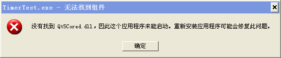

Qt编程涉及的术语和名词
本节我们来介绍一下使用 Qt 编程过程中常用的术语和名字，它们不一定专属于 Qt，在其它的 C/C++ 开发过程中也会使用到。
集成开发环境通常都是依据项目文件（.pro/.vcproj）管理和构建项目。
简单的说，就是定义好 Makefile ，让程序员只需要去关注如何编写代码，而生成程序过程中的脏活累活都交给 make 程序。
现在 Makefile 通常都有工具自动生成，如 qmake 工具， 这样就大量减轻了程序员的负担。
与之相对的是 Release 发行版，在纠正了发觉到的错误后，需要发布程序用于实际用途，实际应用时强调运行效率高，减少冗余代码，因此会对二进制程序进行大量优化，提升性能。这样发布的二进制目标程序就是 Release 版。
Debug 版本和 Release 版本使用的库文件不一样：
Qt 从 4.8 版本就开始用 C++11 新特性了。编译器里面开始支持 C++11 的版本是 MSVC 2010、GCC 4.5、Clang 3.1，这之后版本的编译器都在逐步完善对 C++11 的支持，现在新版本编译器对新标准的支持都比较全面了。
Qt 官方在编译 Qt5 库的时候都是开启 C++11 特性的，如果我们要在自己项目代码启用新标准，需要在 .pro 文件里面添加一行：
为了优化内存运用效率，引入了动态链接库（Dynamic Link Library），或叫共享库（Shared Object）。使用动态链接库时，内存中只需要一份该库文件，其他程序要使用该库文件时，只要链接过来就行了。由于动态库文件外置，链接到动态库的目标程序相对比较小，因为剥离了大量库代码，而只需要一些链接指针。
使用动态库，也意味着程序需要链接到如 *.dll 或 *.so 文件，得提前装好动态库文件，然后目标程序才能正常运行。
MinGW 比较特殊，是将 GNU 工具集和链接库从 Linux/Unix 系统移植到 Windows 里， 有意思的情况就出现了，MinGW 使用的静态库扩展名为 .a ，而其动态库扩展名则为 .dll， .a 仅在生成目标程序过程中使用，.dll 则是在目标程序运行时使用。
动态链接库通常都有其导出函数列表， 告知其他可执行程序可以使用它的哪些函数。可执行程序使用这些导出函数有两种方式：一是在运行时使用主动加载动态库的函数，Linux 里比如用 dlopen 函数打开并加载动态库，Windows 里一般用 LoadLibrary 打开并加载动态库，只有当程序代码执行到这些函数时，其参数里的动态库才会被加载，这就是显式链接。显式链接方式是在运行时加载动态库，其程序启动时并不检查这些动态库是否存在。
隐式链接是最为常见的，所有的编译环境默认都是采用隐式链接的方式使用动态库。隐式链接会在链接生成可执行程序时就确立依赖关系，在该程序启动时，操作系统自动会检查它依赖的动态库，并一一加载到该程序的内存空间，程序员就不需要操心什么时候加载动态库了。比如 VC 编译环境，链接时使用动态库对应的 .lib 文件（包含动态库的导出函数声明，但没有实际功能代码），在 .exe 程序运行前系统会检查依赖的 .dll，如果找不到某个动态库就会出现类似下图对话框：
MinGW 是将动态库的导出函数声明放在了 .a 文件里，程序运行依赖的动态库也是 .dll 。
请注意，VC 链接器使用的 .lib 文件分两类，一种是完整的静态库，体积比较大，另一种是动态库的导出声明，体积比较小。MinGW 链接器使用的 .a 文件也是类似的，Qt 官方库都是按照动态库发布的，静态库只有自己编译才会有。
Project
Project 的中文翻译是“项目”或者“工程”，这里的项目是指为实现某个相对独立功能的程序代码合集，这些代码不单单是放在一块，而是有相互之间的关联性，并且有专门负责管理该项目的项目文件，比如：- Qt 使用 .pro 文件管理项目；
- VC++ 则使用 .vcproj 作为项目文件。
集成开发环境通常都是依据项目文件（.pro/.vcproj）管理和构建项目。
Makefile
即生成脚本，虽然可以直接调用编译器如 g++ 编译程序，但是如果项目里的代码文件变多了，哪些代码文件更新了需要重新编译，哪些代码没有改不需要重新编译等等，靠程序员自己记忆去处理是比较麻烦的事，还有哪些代码需要预处理或是链接哪些库文件， 这些都是繁杂的过程。为了规范程序的编译生成过程，产生了规范化的生成脚本，就是 Makefile，生成器 make 可以依据规范的 Makefile 自动生成目标程序或库文件。简单的说，就是定义好 Makefile ，让程序员只需要去关注如何编写代码，而生成程序过程中的脏活累活都交给 make 程序。
现在 Makefile 通常都有工具自动生成，如 qmake 工具， 这样就大量减轻了程序员的负担。
Debug 和 Release
Debug 即调试，Release 即发行。代码编写之后，生成的目标程序或库文件通常不会绝对正确，或多或少有些毛病（bug）， 因此需要进行纠错调试（Debug）。调试过程中需要源代码和二进制目标程序之间一一对应的关系， 这样才能定位到错误代码，所以 Debug 版本的程序是臃肿而不进行优化的。与之相对的是 Release 发行版，在纠正了发觉到的错误后，需要发布程序用于实际用途，实际应用时强调运行效率高，减少冗余代码，因此会对二进制程序进行大量优化，提升性能。这样发布的二进制目标程序就是 Release 版。
Debug 版本和 Release 版本使用的库文件不一样：
- Debug 版本程序通常链接的也是 Debug 版本的库文件，比如 libQt5Guid.a/Qt5Guid.dll，库文件的简短名（不含扩展名）都是以 d 结尾的，Debug 库通常都比较大 。
- Release 版本程序链接的通常就是 Release 版本的库文件，Release 版本库文件名字比 Debug 版本库文件少一个字母 d ，如 libQt5Gui.a/Qt5Gui.dll，而且 Release 版本库一般都比 Debug 版本小很多，运行效率也高很多。
C++11 标准
时代在变化，C++ 标准也在前进。C++ 正式公布标准有 C++98、C++03、C++11。最新的 C++11 标准是2011年8月12日公布的，在公布之前该标准原名为 C++0x 。这是一次较大的修订和扩充，建议读者专门学一下。Qt 从 4.8 版本就开始用 C++11 新特性了。编译器里面开始支持 C++11 的版本是 MSVC 2010、GCC 4.5、Clang 3.1，这之后版本的编译器都在逐步完善对 C++11 的支持，现在新版本编译器对新标准的支持都比较全面了。
Qt 官方在编译 Qt5 库的时候都是开启 C++11 特性的，如果我们要在自己项目代码启用新标准，需要在 .pro 文件里面添加一行：
CONFIG += c++11
如果是 Qt4 版本则是添加：gcc:CXXFLAGS += -std=c++0x
MSVC 编译器默认开启 C++11 特性，GCC（g++命令）则需要自己添加选项 -std=c++0x ，上面 CXXFLAGS 就是为 GCC 编译器（g++命令）添加 -std=c++0x 选项。Dynamic Link 和 Static Link
Dynamic Link 即动态链接，Static Link 即静态链接。动态链接库
目标程序通常都不是独立个体，生成程序时都需要链接其他的库，要用到其他库的代码。对于多个程序同时运行而言，内存中就可能有同一个库的多个副本，占用了太多内存而干的活差不多。为了优化内存运用效率，引入了动态链接库（Dynamic Link Library），或叫共享库（Shared Object）。使用动态链接库时，内存中只需要一份该库文件，其他程序要使用该库文件时，只要链接过来就行了。由于动态库文件外置，链接到动态库的目标程序相对比较小，因为剥离了大量库代码，而只需要一些链接指针。
使用动态库，也意味着程序需要链接到如 *.dll 或 *.so 文件，得提前装好动态库文件，然后目标程序才能正常运行。
静态链接库
静态库就是将链接库的代码和自己编写的代码都编译链接到一块，链接到静态库的程序通常比较大，但好处是运行时依赖的库文件很少，因为目标程序自己内部集成了很多库代码。库文件后缀
Linux/Unix 系统里静态库扩展名一般是 .a，动态库扩展名一般是 .so 。Windows 系统里 VC 编译器用的静态库扩展名一般是 .lib，动态库扩展名一般是 .dll 。MinGW 比较特殊，是将 GNU 工具集和链接库从 Linux/Unix 系统移植到 Windows 里， 有意思的情况就出现了，MinGW 使用的静态库扩展名为 .a ，而其动态库扩展名则为 .dll， .a 仅在生成目标程序过程中使用，.dll 则是在目标程序运行时使用。
Explicit Linking 和 Implicit Linking
Explicit Linking 即显式链接，Implicit Linking 即隐式链接，这两种都是动态链接库的使用方式。动态链接库通常都有其导出函数列表， 告知其他可执行程序可以使用它的哪些函数。可执行程序使用这些导出函数有两种方式：一是在运行时使用主动加载动态库的函数，Linux 里比如用 dlopen 函数打开并加载动态库，Windows 里一般用 LoadLibrary 打开并加载动态库，只有当程序代码执行到这些函数时，其参数里的动态库才会被加载，这就是显式链接。显式链接方式是在运行时加载动态库，其程序启动时并不检查这些动态库是否存在。
隐式链接是最为常见的，所有的编译环境默认都是采用隐式链接的方式使用动态库。隐式链接会在链接生成可执行程序时就确立依赖关系，在该程序启动时，操作系统自动会检查它依赖的动态库，并一一加载到该程序的内存空间，程序员就不需要操心什么时候加载动态库了。比如 VC 编译环境，链接时使用动态库对应的 .lib 文件（包含动态库的导出函数声明，但没有实际功能代码），在 .exe 程序运行前系统会检查依赖的 .dll，如果找不到某个动态库就会出现类似下图对话框：

MinGW 是将动态库的导出函数声明放在了 .a 文件里，程序运行依赖的动态库也是 .dll 。
请注意，VC 链接器使用的 .lib 文件分两类，一种是完整的静态库，体积比较大，另一种是动态库的导出声明，体积比较小。MinGW 链接器使用的 .a 文件也是类似的，Qt 官方库都是按照动态库发布的，静态库只有自己编译才会有。
关注公众号「站长严长生」，在手机上阅读所有教程，随时随地都能学习。内含一款搜索神器，免费下载全网书籍和视频。

微信扫码关注公众号